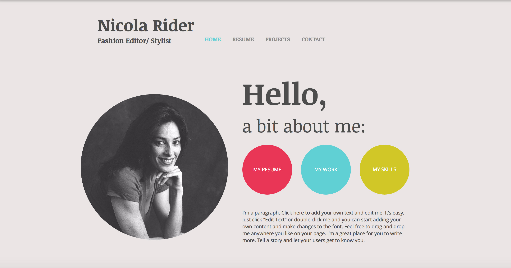
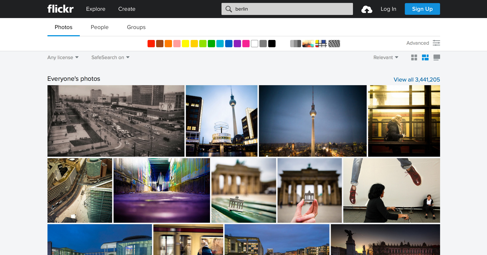
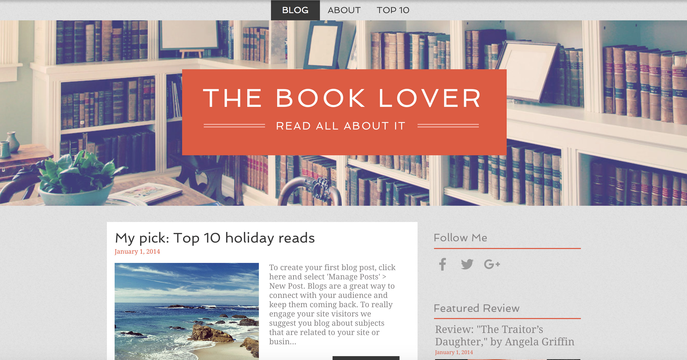
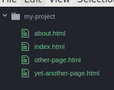
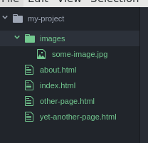
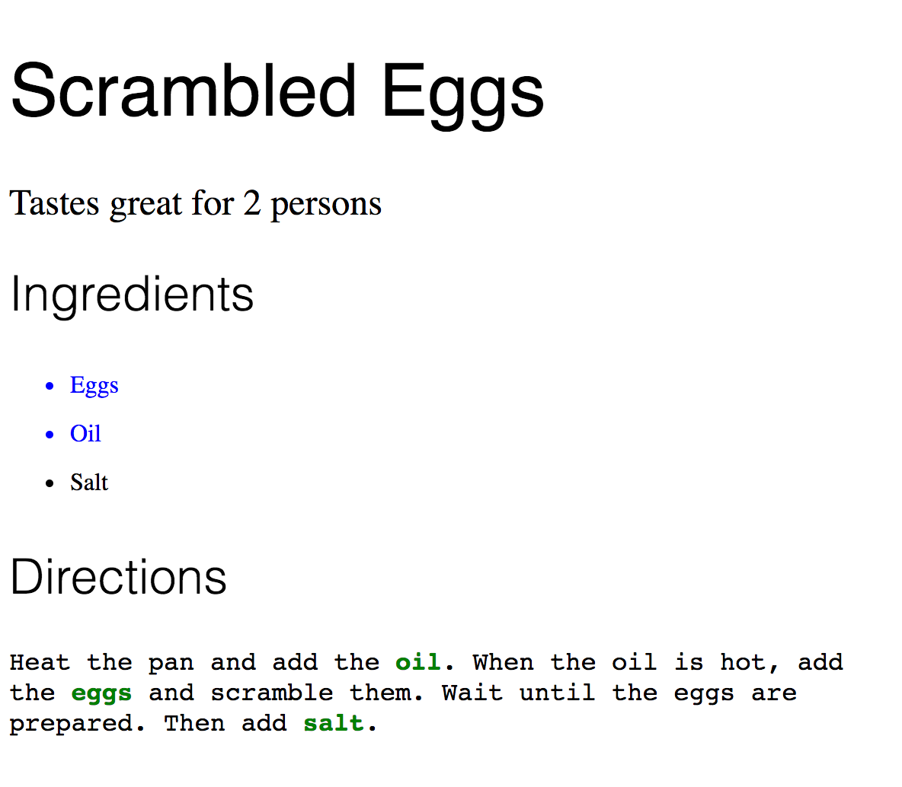
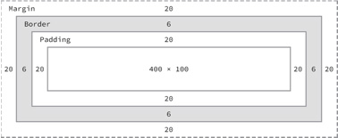
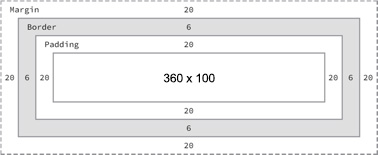
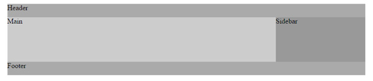

Introducing HTML/CSS ReDI School of Digital Integration
Websites...
On this introductory course at ReDI, we'll learn how to do a website.
With HTML we will create the structure for each page (a website can have many webpages or "pages") and also add the content.
With CSS we will define how that page will look like.
Websites...
Personal websites

Photo websites

Blogs

Social Media websites
E-commerce websites
News websites
Businesses websites
Entertainment websites
and many, many others.
Ah, the rules...
Yes, we have some class rules that we all should respect
Ah, the rules...
Rule 1
No phones (or Facebook, Skype, chat, etc) during class.
If you break the rule, you will have to sing for us. And yes, we will choose the song.
Ah, the rules...
Rule 2
Be punctual. The classes will start at 19:00hs, not after.
Arrive some minutes before, get coffee, say hi and be ready to start at 19:00
Introducing HTML/CSS
HTML Basics
What is HTML?
 Image Attribution: Paul Clarke (http://paulclarke.com/photography/)
Image Attribution: Paul Clarke (http://paulclarke.com/photography/)
- Hypertext Markup Language: HTML is a language for writing documents
- Hypertext: Documents link to each other
- Markup: Describes the semantic role of parts of a document
It was created by Tim Berners-Lee in 1990 to help scientists at CERN share documents
Semantic Markup
Semantic role = purpose
A document has different parts such as title, sections and images
Exercise: identify parts of a print document
HTML structure
An HTML document is made of text and 'markup' tags which are used to define the structure, appearance and function of the information.
An HTML document is divided into two main section : Heading and Body
HTML structure
- Heading - it contains informations about the document such as title, scripts, styles, meta information, and more
<head></head>
- Body - it contains everything you see on the web: text, images, graphic and other elements.
<body></body>
Example of an HTML Doc
<!DOCTYPE html>
<html>
<head>
<title>Title of the document</title>
</head>
<body>
The content of the document...
</body>
</html>
HTML elements
<p>This is paragraph content.</p>
<h1>This is heading content.</h1>
<h2>This is heading content.</h2>
<div>This is division content.</div>
<br>
<strong>Display text stronger</strong>
<img src="path/to/image.jpg"/>
<hr>
<ul>Unordered Lists </ul> or <ol>Ordered list </ol>
<li> list items</li>
<table></table>
<tr></tr>
<th></th>
<td></td>
Code comments
Help yourself and future team mates by commenting your code!
What are comments?
- Text within the code, that isn't displayed to the visitor
- Write in human understandable speech, not as code
- Help to remember coding decisions
- Help to structure the code better
Code comments
Example
<!-- list of ingredients, every list
item is an ingredient of the recipe -->
<ul>
<li>Eggs</li>
<li>Oil</li>
<li>Salt</li>
<!-- salt could be removed,
as it is not mandatory for scrambled eggs -->
</ul>
Let's Start Coding!
Open Atom and Google Chrome
Create an HTML document and add
- Title
- Paragraph
- Heading
- List
- Image
Normal HTML elements
Normal tags have start and end, content in the middle:
<p>bla bla</p>
Can be nested:
<p>bla bla <strong>bla</strong> bla</p>
But never interleaved!
WRONG: <p><strong></p></strong>
Empty HTML elements
Some elements have no content, so no closing tag:
<br>
<img>
<hr>
<input>
Can occur within the content of normal elements:
<p> ... <br> ... </p>
Element attributes
Elements can have attributes. Inside (start) tag:
<img src="images/test.jpg">
<p class="test"> ... </p>
Multiple attributes:
<img src="images/test.jpg" alt="An image" class="test">
Project structure

It's easier if you follow a structure
Create a folder for the project, e.g. my-project
Name the start page index.html
Add other pages named e.g. other-page.html
Exercise
I have a recipe to cook scrambled eggs
But I only have the text yet
Help me to add the correct html tags
Exercise
Add all the tags around this text that was rendered from HTML:
Scrambled eggs
For 2 persons
Ingredients
Instructions
- Heat the pan, add oil, then add the eggs.
- Add salt
- Scramble the eggs
- When the eggs are ready to eat, serve them.
Solution
<!DOCTYPE html>
<html>
<head>
</head>
<body>
<h1>Scrambled eggs</h1>
<p>For 2 persons</p>
<h2>Ingredients</h2>
<ul>
<li>2 Eggs</li>
<li>Salt</li>
<li>Oil</li>
</ul>
<h2>Instructions</h2>
<ol>
<li>Heat the pan, add oil, then add the eggs</li>
<li>Add salt</li>
<li>Scramble the eggs</li>
<li>When the eggs are ready to eat, serve them</li>
</ol>
</body>
</html>
Embed image
Exercise
- Create folder called images
- Download an image into it
- Embed image in web page
This is the basic HTML you need to embed an image:
<img src="images/image.jpg" alt="image description">
You can add more control with WIDTH and HEIGHT
<img src="images/image.jpg" alt="image description" width="300" height="200">
Link
To link to another page, add anatag, with anhrefattribute
<a href="other-page.html">Other page</a>
In your project: add a new file, and link to it fromindex.html
URLs
A full URL has a protocol, domain, and path
http://mysite.com/some-page-over-there.html
Here the protocol ishttp, domain ismysite.com, path is/some-page-over-there.html
What other protocols do you know?
In your project: link to an external domain from one of your pages
More structure with relative URLs

If a URL is not complete, the browser uses the current context
The image reference in theimgtag is a URL as well
<img src="images/some-image.jpg">
In your project: add a folderimages, move picture into it, changeimg
Image as Link
So far we have made text links.
How can we make an image into a link?
Remember, what was inside theatag when making a text link?
Image as Link - Solution
This is a text link
Code:
<a href="https://www.google.com">This is a text link</a>
This is an image as a link:
Code:
<a href="https://www.google.com"><img src="img/grafzahl2.jpg"></a>
Tables
The table element represents data with more than one dimension, in the form of a table.
For example...
| Position |
Team |
Matches Played |
Points |
| 1 |
Dortmund |
6 |
16 |
| 2 |
Hoffenheim |
6 |
14 |
| 3 |
Bayern München |
6 |
13 |
| 4 |
Hannover 96 |
6 |
12 |
HTML tables - simple
<table style="width: 50%;" border="1">
<tr>
<th>Position</th>
<th>Team</th>
</tr>
<tr>
<td>1</td>
<td>Dortmund</td>
</tr>
</table>
Wrap everything intable, table rows intr, table headers inth, table cells intd
HTML tables / more structure
| Position |
Team |
| 1 |
Dortmund |
| 2 |
Hoffenheim |
<table>
<thead>
<tr>
<th>Position</th>
<th>Team</th>
</tr>
</thead>
<tbody>
<tr>
<td>1</td>
<td>Dortmund</td>
</tr>
<tr>
<td>2</td>
<td>Hoffenheim</td>
</tr>
</tbody>
</table>
Addtheadandtbody
The <thead> tag is used to group header content in an HTML table. It is used in conjunction with the <tbody> and <tfoot> elements to specify each part of a table (header, body, footer).
Browsers can use these elements to enable scrolling of the table body independently of the header and footer. Also, when printing a large table that spans multiple pages, these elements can enable the table header and footer to be printed at the top and bottom of each page.
HTML 5 Elements for more structure
<main>...</main>
Defines main part of a document
<aside>...</aside>
Defines content aside from the main content (like a sidebar)
<header>...</header>
Defines a header for a document or a section (different than head!)
<footer>...</footer>
Defines a footer for a document or a section
Task
1. Create a new page and copy the following code from pastebin.com/raw/Cqp3qyAU
2. Add the tags main, header, footer, aside and nav to structure the code reasonably
3. Save as a new page
<h1>Best Recipes Website</h1>
<ul>
<li><a href="index.html">Homepage</a></li>
<li><a href="about.html">About us</a></li>
</ul>
<h2>Scrambled eggs</h2>
<p>For 2 persons</p>
<h3>Instructions</h3>
<ol>
<li>Heat the pan, add oil and the eggs</li>
<li>Scramble the eggs</li>
<li>Serve</li>
</ol>
<h4>More Recipes</h4>
<ul>
<li>Boiled Egg</li>
<li>Blue milk</li>
<li>Spaetzle</li>
</ul>
<p>Copyright 2017 by Your Name</p>
One possible solution
<header>
<h1>Best Recipes Website</h1>
<nav>
<ul>
<li><a href="index.html">Homepage</a></li>
<li><a href="about.html">About us</a></li>
</ul>
</nav>
</header>
<main>
<h2>Scrambled eggs</h2>
<p>For 2 persons</p>
<h3>Instructions</h3>
<ol>
<li>Heat the pan, add oil and the eggs</li>
<li>Scramble the eggs</li>
<li>Serve</li>
</ol>
</main>
<aside>
<h4>More Recipes</h4>
<ul>
<li>Boiled Egg</li>
<li>Blue milk</li>
<li>Spaetzle</li>
</ul>
</aside>
<footer>
<p>Copyright 2017 by Your Name</p>
</footer>
Project for the course
We want to help you build your own website
All the websites will have similar pages like "About", "Blog/news" and "Contact", but you can choose if you want to show what you do (portfolio-type) or sell products (ecommerce-type).
Portfolio examples: photos you take, music you like, etc
Ecommerce examples: food, clothes, furniture, software... anything you can sell.
Which project do you want to work on during this course?
Introducing HTML/CSS
CSS Basics
Lesson Goals
- Learn the basics of using CSS to create styles and layouts
- Review HTML and integrate it with CSS
What is CSS?
- Cascading Style Sheets
- Describes how HTML elements are to be displayed on different screens and in print
- HTML documents have a tree-structure. CSS makes good use of it through inheritance
- HTML elements inherit stylistic properties through CSS
Why CSS?
- Inline styles are hard to maintain and update
- Separate presentation from content
- Quickly update styles for the whole document
- Swap between different styles, e.g. for accessibility, to update a design or to personalize the website for a visitor
CSS Syntax
selector {
property: value;
}
Properties are things like background, color, width and height.
Class Selectors
Class selectors allow us to assign a class on the page and add style properties to it.
We can set a class to have red text:
.red {
color: red;
}
The dot notation (.red) defines a class
How to use a class
Every element, that has the class assigned, inherits the class' properties.
<a href="about.html" class="red">A red link</a>
Attention: the class is written without a dot in HTML
Where to type CSS?
Task
1. Add the following line to the <head> of one of your pages
<head>
<link rel="stylesheet" href="stylesheet.css">
</head>
2. Create a new file called stylesheet.css
3. Add the following CSS to the stylesheet.css:
.red {
color: red;
}
4. Add a red link to one of your pages, using the css class .red
Find the mistakes 1
<html>
<head>
<title>Title of the Page</title>
<body>
</body>
</html>
Solution 1
<html>
<head>
<title>Title of the Page</title>
</head>
<!-- Head needs to be closed -->
<body>
</body>
</html>
Find the mistakes 2
<html>
<body>
<table>
<thead>
<th>Ingredient</th>
<th>Amount</th>
</thead>
<tbody>
<td>Salt</td>
<td>a little bit</td>
<td>Oil</td>
<td>1 tablespoon</td>
</tbody>
</table>
</body>
</html>
Solution 2
<html>
<body>
<table>
<thead>
<tr><!-- tr was missing -->
<th>Ingredient</th>
<th>Amount</th>
</tr>
</thead>
<tbody>
<tr><!-- tr was missing -->
<td>Salt</td>
<td>a little bit</td>
</tr>
<tr><!-- tr was missing -->
<td>Oil</td>
<td>1 tablespoon</td>
</tr>
</tbody>
</table>
</body>
</html>
Find the mistakes 3
<html>
<body>
<header>
<h1>Name of the Website</h1>
</header>
<main> A text about a recipe </main>
<header> Imprint </header>
</body>
</html>
Solution 3
<html>
<body>
<header>
<h1>Name of the Website</h1>
</header>
<main> A text about a recipe </main>
<footer><!-- the bottom of the page is the footer -->
Imprint </footer>
</body>
</html>
Find the mistakes 4
<html>
<body>
<header>
<h1>Name of the Website</h1>
</header>
<main> A text about a recipe </main>
<main> A text about another recipe </main>
<footer> Imprint </footer>
</body>
</html>
Solution 4
<html>
<body>
<header>
<h1>Name of the Website</h1>
</header>
<main><!-- there may only be one main element per page -->
<section> A text about a recipe </section>
<section> A text about another recipe </section>
</main>
<footer> Imprint </footer>
</body>
</html>
Find the mistakes 5
<html>
<body>
<header>
<nav> <a href="index.html">Link to the Homepage</a> </nav>
</header>
<body>
A text about a recipe here.
</body>
</body>
</html>
Solution 5
<html>
<body>
<header>
<nav> <a href="index.html">Link to the Homepage</a> </nav>
</header>
<main><!-- there is only one body per page -->
A text about a recipe here. </main>
</body>
</html>
Find the mistakes 6
<html>
<header>
<title>Some page title</title>
</header>
<body>
<p> Some text about the page here </p>
</body>
</html>
Solution 6
<html>
<head>
<!-- Do not confuse head with header -->
<title>Some page title</title>
</head>
<body>
<p> Some text about the page here </p>
</body>
</html>
Find the mistakes 7
<html>
<head>
<title>Some page title</title>
</head>
<body>
<p> Some text about the page here </p>
<-- A comment, that the visitor cannot see in the browser -->
</body>
</html>
Solution 7
<html>
<head>
<title>Some page title</title>
</head>
<body>
<p> Some text about the page here </p>
<!-- a comment is done like this: -->
<!-- A comment, that the visitor cannot see in the browser -->
</body>
</html>
Find the mistakes 8
<html>
<head>
<title>Some page title</title>
</head>
<body>
<h1> The Title </h1>
<p> Some the about the homepage </p>
<ul>
<li>Scrambled Eggs</li>
<li>Blue Milk</li>
<li>Smashed Potatoes</li>
<li>Burger and Fries
</ul>
</body>
</html>
Find the mistakes 8
<html>
<head>
<title>Some page title</title>
</head>
<body>
<h1> The Title </h1>
<p> Some the about the homepage </p>
<ul>
<li>Scrambled Eggs</li>
<li>Blue Milk</li>
<li>Smashed Potatoes</li>
<li>Burger and Fries</li>
<!-- this closing li was missing -->
</ul>
</body>
</html>
Find the mistakes 9
<html>
<head>
<title>Some page title</title>
</head>
<body>
<p> Some text about the page here </p>
</body>
</html>
Solution 9
Indentation is important for the code quality. It improves the
understanding of the code, makes missing tags easier to find and
makes sure the code may be maintained by teammates or yourself
in the future.
<html>
<head>
<title>Some page title</title>
</head>
<body>
<p> Some text about the page here </p>
</body>
</html>
Find the mistake 10
index.html
<html>
<head>
<link href="stylesheet.css" rel="stylesheet">
</head>
<body>
<p class=".warning"> Some text about the page here </p>
</body>
</html>
stylesheet.css
.warning {
color: red;
}
Solution 10
index.html
<html>
<head>
<link href="stylesheet.css" rel="stylesheet">
</head>
<body>
<p class="warning"><!-- in HTML the class is written without dot -->
Some text about the page here </p>
</body>
</html>
stylesheet.css
.warning {
color: red;
}
Find the mistake 11
index.html
<html>
<head>
<link href="stylesheet.css" rel="stylesheet">
</head>
<body>
<p class="warning"> Some text about the page here </p>
</body>
</html>
stylesheet.css
<p>More text about the Homepage here</p>
.warning {
color: red;
}
Solution 11
No HTML in CSS
index.html
<html>
<head>
<link href="stylesheet.css" rel="stylesheet">
</head>
<body>
<p class="warning"> Some text about the page here </p>
<p> More text about the Homepage here </p>
</body>
</html>
stylesheet.css
.warning {
color: red;
}
Examples CSS syntax
.warning {
color: red;
}
All elements with the class "warning" should have red text
Examples CSS syntax
.error {
font-size: 2em;
}
All elements with the class "error" should have double sized text.
Examples CSS syntax
.sourcecode {
font-family: monospace;
}
All elements with the class "sourceode" should have monospaced text
Examples CSS syntax
.bigtext {
color: grey;
font-size: 40px;
font-weight: 700;
}
All elements with the class "bigtext" should have grey text with 40 pixels in size and
a bold font type.
Examples CSS syntax
.quotation {
color: blue;
font-family: Arial, sans-serif;
line-height: 2;
}
All elements with the class "quotation" should have blue text with
the font type Arial, if it is available, or another type without serifs
and a line height of 2.
More CSS text properties
| Property |
Example values |
| font-size |
12px | 22px | 2em | 120% |
| font-family |
serif | sans-serif | monospace | Arial, sans-serif |
| font-weight |
300 | 500 | 700 | 900 |
| font-style |
normal | italic | oblique |
| line-height |
normal | 1.5em | 180% | 6px | 0.8 |
Play around with different classes or different styles
Cascading
An element may have several classes. It inherits the properties of every class
HTML
<a href="index.html" class="colorized underlined">blue underlined text</a>
CSS
.colorized {
color: blue;
}
.underlined {
text-decoration: underline;
}
Practice
Create a new folder, a new index.html and a new stylesheet.css
Link index.html with stylesheet.css and recreate this colorful page

Element selectors
Instead of classes you may choose to use elements as the selector
This is not considered best practice.
Only use it for specific cases.
Example element selectors
h1 {
color: red;
}
p {
line-height: 1.5;
}
header {
font-size: 1.5em;
}
ID selectors
index.html
<body id="news">
...
Here comes the content of the News page of a website
...
</body>
stylesheet.css
#news h1 {
background-color:#06c;
color:#fff;
}
Box Model
- Every element on the page is a rectangle.
- Every rectangle can have a height, width, margin, borders and padding.
Box Model
- It's the job of the browser to figure out from our CSS the size of each rectangle and where it should be placed on the page.
- The box model describes some of the rules for doing this.
Box Model

div {
width:400px;
height:100px;
margin:20px;
padding:20px;
border-width:6px;
}
Box Model - Box Sizing

div {
width:452px;
height:100px;
margin:20px;
padding:20px;
border-width:6px;
box-sizing:border-box;
}
Width is 452px: 360+20x2+20x2+6+6
Most used properties
| Property |
Values |
Used with Elements |
| color |
#RRGGBB (Red, Green, Blue hex values) |
any element that contains text |
| text-align |
left | right | center | justify |
block elements h1..h6, p, li, etc. |
| Text-decoration |
none | underline | overline | line-through | blink |
mostly with a (anchor) elements |
| text-transformation |
none | capitalize | uppercase | lowercase |
any element that contains text |
| line-height |
% or em/rem/px |
block elements h1..h6, p, li, etc. |
| letter-spacing |
normal or em/rem/px value |
any element that contains text |
| font-family |
font or font-family [, font or font-family ...] |
any element that contains text |
| font-size |
em/rem/px value |
any element that contains text |
| font-style |
normal | italic | oblique |
any element that contains text |
| font-weight |
normal | bold |
any element that contains text |
Most used properties
| Property |
Values |
Used with Elements |
| background-color |
#RRGGBB (Red, Green, Blue hex values) |
any element with a background |
| background-image |
url("[image url]") |
mostly with body |
| background-repeat |
repeat | repeat-x | repeat-y | no-repeat |
mostly with body |
| background-position |
left | center | right | top | center | bottom |
mostly with body |
| list-style-type |
disc | square | circle |
ul |
| list-style-type |
decimal | lower-roman | upper-roman |
ol |
| list-style-type |
lower-alpha | upper-alpha |
ol |
Exercise
- Start a new css file for the recipe.
- Color the text (H1, H2, LI, P). Use https://color.adobe.com/ for colors.
- Try outlines, backgrounds and different fonts.
- Add an image as a background
Selectors - ID
Sometimes we don't want every element to be styled the same. So we need to use more specific selectors.
One type of selector is the id.
Each id must be unique - no more than one element on a single page can have the same id.
Selectors - ID
<div id="header">My Header</div>
#header {
background:yellow;
}
Selectors - classes
Classes are another useful selector.
They can be applied to many elements.
Selectors - classes
<p class="citation">Blah blah</p>
<p class="citation">Blah blah</p>
.citation {
border-left:10px solid green;
}
Nested selectors
Selectors can be nested to give you more precise control.
<div id="header">
<a href="#home">Home</a>
</div>
#header a {
color:purple;
}
Pseudo selectors
Pseudo selectors give us additional control. There are a few different types but we will only look at :hover
The hover state of an element is how it looks when the mouse is over it. It's often used on links.
Pseudo selectors
<a href="#home">Home</a>
a {
color:blue;
}
a:hover {
color:lightblue;
}
Connecting a stylesheet
We can connect a stylesheet to our HTML document by linking to it in the <head> section
<link type="text/css" rel="stylesheet" href="css/demo-style.css">
Specificity
Not all selectors are equal in "power"
If there are two or more rules that apply to an element, the most specific selector is used
If the two rules have equal specificity, then the latest rule is applied.
Specificity
li {
color:green;
}
li.special {
color:red;
}
Specificity
| Selector Type |
Value |
Example |
| inline |
1000 |
<p style="color:red;">Hi</p> |
| ID |
100 |
#header |
| Class |
10 |
.citation |
| element |
1 |
ul |
Specificity - Examples
#header a
1 id + 1 element = 100 + 1 = 101
#main p.citation a
1 id + 1 class + 2 elements = 100 + 10 + 2 = 112
Activity
Selectors Challenge!
CSS Layout
We'll use the example files to explore CSS layout techniques:
- display.html
- box-model.html
- floats.html
Document Flow
Document flow refers to the way the browser positions elements on the page.
In general, the browser starts at the top left of the page and starts placing elements one after another.
Document Flow
Document flow is most affected by a property called display.
There are two main display properties: block and inline.
Document Flow
Block elements expand to the full width of the available horizontal space. The next element will be placed underneath.
A div is an example of a block level element. It expands to the full width of the available space.
Document Flow
Inline level elements are only as wide as their content. Multiple inline elements stack up next to each other and can be nested inside block level elements.
A span is an example of an inline level element.
Document Flow
Block level elements are used for large pieces of content such as headings or text areas.
Inline level elements are used to style small areas, such as adding italics to a few words.
Document Flow
| Block level elements |
Inline level elements |
| header, footer, nav, section, main, div, table, form |
span, img, a |
| h1,h2,h3,h4,h5,h6 |
strong, em |
| ul, ol, p |
button, input, label, select, textarea |
Document Flow
Using the CSS property display we can override the default display setting and change an element to be block or inline.
This is useful because it's not possible to set the width or height of inline level elements.
Document Flow
We can also hide an element by settingdisplay:none;
Floats
Floated elements are the fundamental tool for creating complex, grid based layouts.
A floated element does not obey the normal rules of document flow.
Floats
A block level floated element does not expand to the available horizontal space. It expands only as far as its content needs, or as its width property.
The next element will not start below the floated element, but next to it.
Floats
This makes it possible to create a layout with a main section and sidebar, or multiple columns.

Clearfix
There is an annoying problem with floated elements.
The parent of a floated element can no longer "see" the height of its children. This means it treats the elements as if there wereheight:0;
Clearfix
We can solve this using the clearfix technique.
.clearfix:before, .clearfix:after {
content:"";
display:table;
}
.clearfix:after {
clear:both;
}
.clearfix {
zoom:1; /* For IE 6/7 (trigger hasLayout) */
}
Clearfix
Apply the clearfix class to the parent of the floated elements.
<div class="clearfix" style="background:red;">
<div style="width:50%; float:left;">
text
</div>
<div style="width:50%;float:left;">
text
</div>
</div>
Clearfix
| Without clearfix |
With clearfix |
| text |
text |
text |
text |
Reset CSS
Browsers apply different default styles
We use a short reset.css file to reset the default styles to all be the same across different browsers
This makes sure we are starting with a "clean slate"
Putting it all together
So CSS! Much styles!
Web fonts
Web fonts allow us to go beyond system fonts and install any fonts we like on our websites.
You shouldn't go too crazy though - more than two fonts will slow down the page load time.
Web fonts - Google Fonts
Free fonts resource
Browse and make a selection, then add the generated link to your <head>
Set your elements to have the desired fonts
https://www.google.com/fonts
Web fonts with @font-face
You can use commercial or free fonts
Download a font pack and add it to a fonts folder on your website
Use the @font-face command to tell the browser where to find the font files
http://www.fontsquirrel.com/
Cross Browser Issues
Not all browsers interpret CSS in the same way
Mobile browsers may lack support for some properties
New properties are being introduced (CSS3)
Cross Browser Issues
Vendor prefixes are sometimes needed:
-moz-border-radius
-webkit-border-radius
-ms-border-radius
-o-border-radius
border-radius
Cross Browser Issues
http://caniuse.com/is an excellent resource for working out what cutting edge features you can and can't use.
Stick to the principle of progressive enhancement: don't make cutting edge features crucial to your design.
Let's make a website
Exercises
Let's make a website
Let's build a personal website with three pages:
Goals: to practice and learn...
- How to link pages
- How to use the different HTML elements inside a page
- How to make a navigation
- How to give a website a consistent look and feel
Let's make a website
The website will include
- at least 3 titles (H1-H6)
- List/s (ordered or unordered - UL, OL > LI)
- Body text (Paragraphs, P)
- Divs to make groups (DIV)
- Images
We will
- identify the pages with TITLE and ID
- Identify some elements in the HTML with IDs and CLASSES
- style the pages and elements with CSS
Navigation
How to build a horizontal navigation using:
- UL and LI
- ID
- CSS pseudo-selectors (:hover) and nested elements
Tables
Tables and their tags:
- When to use a table
- TABLE, TR, TH, TD tags
HTML Structure
Let's add structural elements to our pages
<header>
- Defines a header for a document or a section
<nav>
- Defines a container for navigation links
<section>
- Defines a section in a document
HTML Structure
<article>
- Defines an independent self-contained article
<aside>
- Defines content aside from the content (like a sidebar)
<footer>
- Defines a footer for a document or a section
Let's add these tags to our sites
Please add these tags to your site,ONLYwhen is relevant:
- <header>
- <nav>
- <footer>
- <section>
- <aside>
- <article>
Image replacement and Table styling
How to replace images for text with CSS
Image Replacement
UL, LI
Negative text indent, background properties, :hover
Let's add a blog to our sites
You can duplicate any of your pages to create the blog.
- The blog should include header, nav, footer, #content, aside and article.
- Let's do it together.
- Don't forget to add the blog to the navigation on the other pages.
Next classes
The goal of these exercises is have your site ready to go responsive.
This means, the site will adapt to different screens and devices such as:
- smart phones
- tablets
- laptop
- desktop